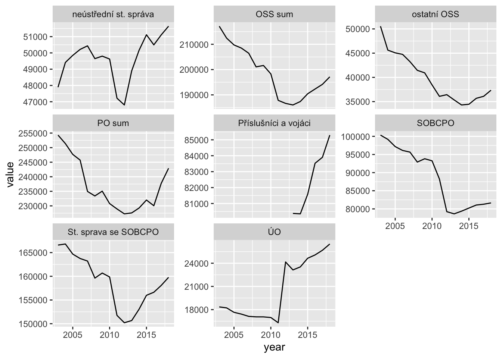
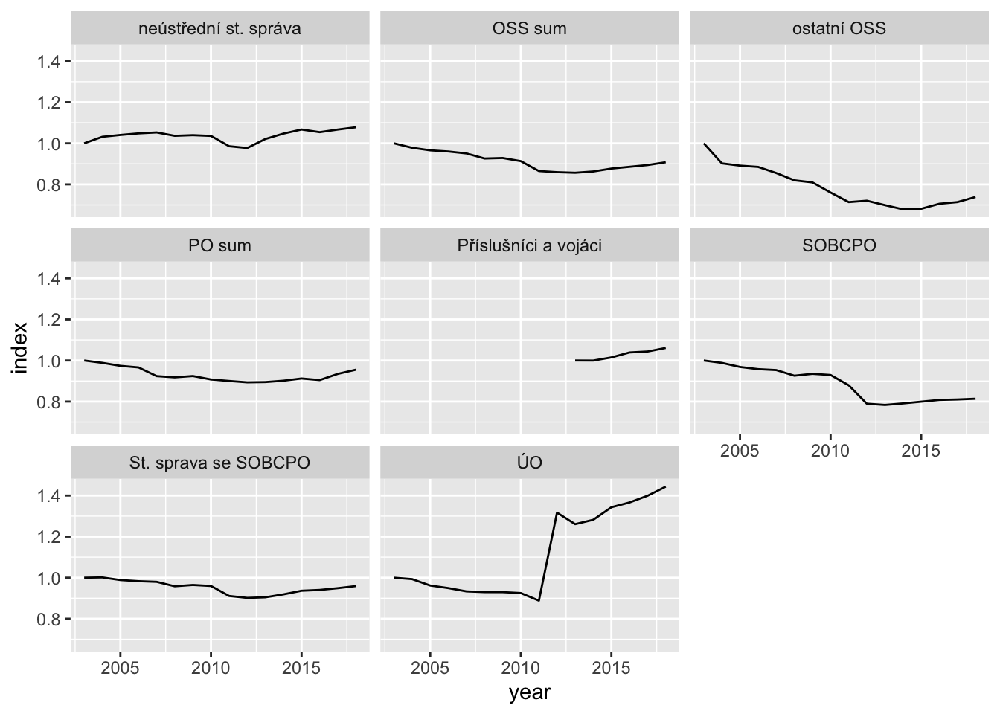

Počty úředníků: 2003-2018
Petr Bouchal
11/2/2019
c13o <- read_csv(here::here("data-output/legacy/groups_ALL.csv"))
dt0 <- read_rds(here::here("data-interim/objemy_pocty_scraped_raw_2012_2018.rds"))unique(c13o$variable) %>% enframe(name = NULL)unique(c13o$grp) %>% enframe(name = NULL)unique(dt0$type) %>% enframe(name = NULL)Explore & prep to merge
Prep data 2013+
dt <- dt0 %>%
filter(kap_num == "C E L K E M" & indicator == "count") %>%
select(year, grp = type, schvaleny = rozp,
skutecnost, upraveny, rozdil, index, plneni) %>%
mutate(grp = recode(grp,
`jedn. OSS státní správy` = "neústřední st. správa",
`ST.SPRÁVA` = "St. sprava se SOBCPO"),
plneni = 2-plneni/100, rozdil = -rozdil)Prep data 2003+
dto <- c13o %>%
filter(promenna == "Zam") %>%
select(grp, sgrp, variable, value, udaj, promenna, UO, exekutiva, Year) %>%
set_names(tolower(names(.))) %>%
mutate_at(vars(udaj, variable, promenna), tolower) %>%
mutate(year = year(year),
udaj = recode(udaj, upr2skut = "plneni",
uprminusskut = "rozdil"),
grp = recode(grp, UO = "ÚO", `OSS-RO` = "OSS sum",
PO = "PO sum",
`OSS-SS` = "neústřední st. správa",
OOSS = "ostatní OSS")) %>%
filter(grp %in% c("ÚO", "ST.SPRÁVA", "SOBCPO", "OSS sum", "ostatní OSS",
"PO sum", "St. sprava se SOBCPO",
"neústřední st. správa"))Check groupings
2003+
unique(dto$grp) %>% enframe(name = NULL)2013+
unique(dt$grp) %>% enframe(name = NULL)Check data by comparing grouping sizes
2003+
dto %>%
filter(udaj == "schvaleny" & year == 2013) %>%
ggplot(aes(grp, value/1000)) +
geom_col() + coord_flip() + ggtitle("2013 - data 2003-2012") +
scale_y_continuous(limits = c(0,250))
2013+
dt %>%
filter(year == 2013) %>%
filter(!(grp %in% c("Příslušníci a vojáci"))) %>%
ggplot(aes(grp, skutecnost/1e3)) +
geom_col() + coord_flip() + ggtitle("2013 - data 2013-2018") +
scale_y_continuous(limits = c(0,250))
Merge data:
srs <- bind_rows(dto %>% mutate(ds = "old") %>%
filter(year != 2013) %>%
select(year, grp, value, udaj),
dt %>% pivot_longer(names_to = "udaj", values_to = "value",
cols = c(schvaleny, skutecnost,
upraveny, rozdil,
index, plneni)) %>%
mutate(ds = "new", year = as.numeric(year)))First charts
NB:
- skok v roce 2012 je daný redefinicí MV, které od 2012 zahrnuje i velení policie a hasičů
- řada příslušníků a vojáků začíná až v 2013, protože z minulé analýzy jsme je tuším úplně vypustil nebo v interních datech MF nebyli
Absolute - comparable
srs %>%
filter(udaj == "skutecnost") %>%
ggplot(aes(year, value)) +
geom_line() +
facet_wrap(~grp)
Absolute - focus on changes
srs %>%
filter(udaj == "skutecnost") %>%
ggplot(aes(year, value)) +
geom_line() +
facet_wrap(~grp, scales = "free_y")
Comparisons
Plan vs. reality
srs %>%
filter(udaj == "plneni") %>%
ggplot(aes(year, 2-value)) +
geom_line() +
facet_wrap(~grp)Growth from 2003 base
srs %>%
filter(udaj == "skutecnost") %>%
group_by(grp) %>%
arrange(year) %>%
mutate(index = value/first(value)) %>%
ggplot(aes(year, index)) +
geom_line() +
facet_wrap(~grp)
LS0tCnRpdGxlOiAiUG/EjXR5IMO6xZllZG7DrWvFrzogMjAwMy0yMDE4IgphdXRob3I6ICJQZXRyIEJvdWNoYWwiCmRhdGU6ICIxMS8yLzIwMTkiCm91dHB1dDogaHRtbF9kb2N1bWVudAotLS0KCmBgYHtyIHNldHVwLCBpbmNsdWRlPUZBTFNFfQprbml0cjo6b3B0c19jaHVuayRzZXQoZWNobyA9IFQsIHdhcm5pbmcgPSBGLCBtZXNzYWdlID0gRiwgcm93cy5wcmludCA9IDIwKQpsaWJyYXJ5KHJlYWRyKQpsaWJyYXJ5KGRwbHlyKQpsaWJyYXJ5KGdncGxvdDIpCmxpYnJhcnkodGlkeXIpCmxpYnJhcnkodGliYmxlKQpsaWJyYXJ5KGx1YnJpZGF0ZSkKbGlicmFyeShwdXJycikKa25pdHI6Om9wdHNfY2h1bmskc2V0KGVjaG8gPSBUUlVFKQpvcHRpb25zKHNjaXBlbiA9IDYpCmBgYAoKYGBge3J9CmMxM28gPC0gcmVhZF9jc3YoaGVyZTo6aGVyZSgiZGF0YS1vdXRwdXQvbGVnYWN5L2dyb3Vwc19BTEwuY3N2IikpCmR0MCA8LSByZWFkX3JkcyhoZXJlOjpoZXJlKCJkYXRhLWludGVyaW0vb2JqZW15X3BvY3R5X3NjcmFwZWRfcmF3XzIwMTJfMjAxOC5yZHMiKSkKYGBgCgpgYGB7ciwgbWF4LnByaW50ID0gMTV9CnVuaXF1ZShjMTNvJHZhcmlhYmxlKSAlPiUgZW5mcmFtZShuYW1lID0gTlVMTCkKdW5pcXVlKGMxM28kZ3JwKSAlPiUgZW5mcmFtZShuYW1lID0gTlVMTCkKdW5pcXVlKGR0MCR0eXBlKSAlPiUgZW5mcmFtZShuYW1lID0gTlVMTCkKYGBgCgojIEV4cGxvcmUgJiBwcmVwIHRvIG1lcmdlIHsudGFic2V0fQoKYGBge3IsIGluY2x1ZGU9Rn0KYzEzbyAlPiUgCiAgc2VsZWN0KGdycCwgc2dycCkgJT4lIAogIGRpc3RpbmN0KCkKYGBgCgojIyBQcmVwIGRhdGEgMjAxMysKCmBgYHtyfQpkdCA8LSBkdDAgJT4lIAogIGZpbHRlcihrYXBfbnVtID09ICJDIEUgTCBLIEUgTSIgJiBpbmRpY2F0b3IgPT0gImNvdW50IikgJT4lIAogIHNlbGVjdCh5ZWFyLCBncnAgPSB0eXBlLCBzY2h2YWxlbnkgPSByb3pwLAogICAgICAgICBza3V0ZWNub3N0LCB1cHJhdmVueSwgcm96ZGlsLCBpbmRleCwgcGxuZW5pKSAlPiUgCiAgbXV0YXRlKGdycCA9IHJlY29kZShncnAsIAogICAgICAgICAgICAgICAgICAgICAgYGplZG4uIE9TUyBzdMOhdG7DrSBzcHLDoXZ5YCA9ICJuZcO6c3TFmWVkbsOtIHN0LiBzcHLDoXZhIiwKICAgICAgICAgICAgICAgICAgICAgIGBTVC5TUFLDgVZBYCA9ICJTdC4gc3ByYXZhIHNlIFNPQkNQTyIpLAogICAgICAgICBwbG5lbmkgPSAyLXBsbmVuaS8xMDAsIHJvemRpbCA9IC1yb3pkaWwpCmBgYAoKIyMgUHJlcCBkYXRhIDIwMDMrCgpgYGB7cn0KZHRvIDwtIGMxM28gJT4lIAogIGZpbHRlcihwcm9tZW5uYSA9PSAiWmFtIikgJT4lIAogIHNlbGVjdChncnAsIHNncnAsIHZhcmlhYmxlLCB2YWx1ZSwgdWRhaiwgcHJvbWVubmEsIFVPLCBleGVrdXRpdmEsIFllYXIpICU+JSAKICBzZXRfbmFtZXModG9sb3dlcihuYW1lcyguKSkpICU+JSAKICBtdXRhdGVfYXQodmFycyh1ZGFqLCB2YXJpYWJsZSwgcHJvbWVubmEpLCB0b2xvd2VyKSAlPiUgCiAgbXV0YXRlKHllYXIgPSB5ZWFyKHllYXIpLAogICAgICAgICB1ZGFqID0gcmVjb2RlKHVkYWosICB1cHIyc2t1dCA9ICJwbG5lbmkiLAogICAgICAgICAgICAgICAgICAgICAgIHVwcm1pbnVzc2t1dCA9ICJyb3pkaWwiKSwKICAgICAgICAgZ3JwID0gcmVjb2RlKGdycCwgVU8gPSAiw5pPIiwgYE9TUy1ST2AgPSAiT1NTIHN1bSIsCiAgICAgICAgICAgICAgICAgICAgICBQTyA9ICJQTyBzdW0iLAogICAgICAgICAgICAgICAgICAgICAgYE9TUy1TU2AgPSAibmXDunN0xZllZG7DrSBzdC4gc3Byw6F2YSIsCiAgICAgICAgICAgICAgICAgICAgICBPT1NTID0gIm9zdGF0bsOtIE9TUyIpKSAlPiUgCiAgZmlsdGVyKGdycCAlaW4lIGMoIsOaTyIsICJTVC5TUFLDgVZBIiwgIlNPQkNQTyIsICJPU1Mgc3VtIiwgIm9zdGF0bsOtIE9TUyIsCiAgICAgICAgICAgICAgICAgICAgIlBPIHN1bSIsICJTdC4gc3ByYXZhIHNlIFNPQkNQTyIsIAogICAgICAgICAgICAgICAgICAgICJuZcO6c3TFmWVkbsOtIHN0LiBzcHLDoXZhIikpCmBgYAoKIyMgQ2hlY2sgZ3JvdXBpbmdzIHsudGFic2V0fQoKIyMjIDIwMDMrCgpgYGB7cn0KdW5pcXVlKGR0byRncnApICU+JSBlbmZyYW1lKG5hbWUgPSBOVUxMKQpgYGAKCiMjIyAyMDEzKyAKCmBgYHtyfQp1bmlxdWUoZHQkZ3JwKSAlPiUgZW5mcmFtZShuYW1lID0gTlVMTCkKYGBgCgojIyBDaGVjayBkYXRhIGJ5IGNvbXBhcmluZyBncm91cGluZyBzaXplcyB7LnRhYnNldH0KCiMjIyAyMDAzKwoKYGBge3J9CmR0byAlPiUgCiAgZmlsdGVyKHVkYWogPT0gInNjaHZhbGVueSIgJiB5ZWFyID09IDIwMTMpICU+JSAKICBnZ3Bsb3QoYWVzKGdycCwgdmFsdWUvMTAwMCkpICsKICBnZW9tX2NvbCgpICsgY29vcmRfZmxpcCgpICsgZ2d0aXRsZSgiMjAxMyAtIGRhdGEgMjAwMy0yMDEyIikgKyAKICBzY2FsZV95X2NvbnRpbnVvdXMobGltaXRzID0gYygwLDI1MCkpCmBgYAoKIyMjIDIwMTMrCgpgYGB7cn0KZHQgJT4lIAogIGZpbHRlcih5ZWFyID09IDIwMTMpICU+JSAKICBmaWx0ZXIoIShncnAgJWluJSBjKCJQxZnDrXNsdcWhbsOtY2kgYSB2b2rDoWNpIikpKSAlPiUKICBnZ3Bsb3QoYWVzKGdycCwgc2t1dGVjbm9zdC8xZTMpKSArCiAgZ2VvbV9jb2woKSArIGNvb3JkX2ZsaXAoKSArIGdndGl0bGUoIjIwMTMgLSBkYXRhIDIwMTMtMjAxOCIpICsKICBzY2FsZV95X2NvbnRpbnVvdXMobGltaXRzID0gYygwLDI1MCkpCmBgYAoKIyMgTWVyZ2UgZGF0YToKCmBgYHtyfQpzcnMgPC0gYmluZF9yb3dzKGR0byAlPiUgbXV0YXRlKGRzID0gIm9sZCIpICU+JQogICAgICAgICAgICAgICAgICAgZmlsdGVyKHllYXIgIT0gMjAxMykgJT4lIAogICAgICAgICAgICAgICAgICAgc2VsZWN0KHllYXIsIGdycCwgdmFsdWUsIHVkYWopLAogICAgICAgICAgICAgICAgIGR0ICU+JSBwaXZvdF9sb25nZXIobmFtZXNfdG8gPSAidWRhaiIsIHZhbHVlc190byA9ICJ2YWx1ZSIsCiAgICAgICAgICAgICAgICAgICAgICAgICAgICAgICAgICAgICBjb2xzID0gYyhzY2h2YWxlbnksIHNrdXRlY25vc3QsCiAgICAgICAgICAgICAgICAgICAgICAgICAgICAgICAgICAgICAgICAgICAgICB1cHJhdmVueSwgcm96ZGlsLCAKICAgICAgICAgICAgICAgICAgICAgICAgICAgICAgICAgICAgICAgICAgICAgIGluZGV4LCBwbG5lbmkpKSAlPiUgCiAgICAgICAgICAgICAgICAgICBtdXRhdGUoZHMgPSAibmV3IiwgeWVhciA9IGFzLm51bWVyaWMoeWVhcikpKQpgYGAKCiMgRmlyc3QgY2hhcnRzIHsudGFic2V0fQoKTkI6CgotIHNrb2sgdiByb2NlIDIwMTIgamUgZGFuw70gcmVkZWZpbmljw60gTVYsIGt0ZXLDqSBvZCAyMDEyIHphaHJudWplIGkgdmVsZW7DrSBwb2xpY2llIGEgaGFzacSNxa8KLSDFmWFkYSBwxZnDrXNsdcWhbsOta8WvIGEgdm9qw6Frxa8gemHEjcOtbsOhIGHFviB2IDIwMTMsIHByb3Rvxb5lIHogbWludWzDqSBhbmFsw716eSBqc21lIGplIHR1xaHDrW0gw7pwbG7EmyB2eXB1c3RpbCBuZWJvIHYgaW50ZXJuw61jaCBkYXRlY2ggTUYgbmVieWxpCgojIyBBYnNvbHV0ZSAtIGNvbXBhcmFibGUgCgpgYGB7cn0Kc3JzICU+JSAKICBmaWx0ZXIodWRhaiA9PSAic2t1dGVjbm9zdCIpICU+JSAKICBnZ3Bsb3QoYWVzKHllYXIsIHZhbHVlKSkgKwogIGdlb21fbGluZSgpICsKICBmYWNldF93cmFwKH5ncnApCmBgYAoKIyMgQWJzb2x1dGUgLSBmb2N1cyBvbiBjaGFuZ2VzCgpgYGB7cn0Kc3JzICU+JSAKICBmaWx0ZXIodWRhaiA9PSAic2t1dGVjbm9zdCIpICU+JSAKICBnZ3Bsb3QoYWVzKHllYXIsIHZhbHVlKSkgKwogIGdlb21fbGluZSgpICsKICBmYWNldF93cmFwKH5ncnAsIHNjYWxlcyA9ICJmcmVlX3kiKQpgYGAKCiMgQ29tcGFyaXNvbnMgey50YWJzZXR9CgojIyBQbGFuIHZzLiByZWFsaXR5CgpgYGB7cn0Kc3JzICU+JSAKICBmaWx0ZXIodWRhaiA9PSAicGxuZW5pIikgJT4lIAogIGdncGxvdChhZXMoeWVhciwgMi12YWx1ZSkpICsKICBnZW9tX2xpbmUoKSArCiAgZmFjZXRfd3JhcCh+Z3JwKQpgYGAKCiMjIEdyb3d0aCBmcm9tIDIwMDMgYmFzZQoKYGBge3J9CnNycyAlPiUgCiAgZmlsdGVyKHVkYWogPT0gInNrdXRlY25vc3QiKSAlPiUgCiAgZ3JvdXBfYnkoZ3JwKSAlPiUgCiAgYXJyYW5nZSh5ZWFyKSAlPiUgCiAgbXV0YXRlKGluZGV4ID0gdmFsdWUvZmlyc3QodmFsdWUpKSAlPiUgCiAgZ2dwbG90KGFlcyh5ZWFyLCBpbmRleCkpICsKICBnZW9tX2xpbmUoKSArCiAgZmFjZXRfd3JhcCh+Z3JwKQpgYGAKCg==